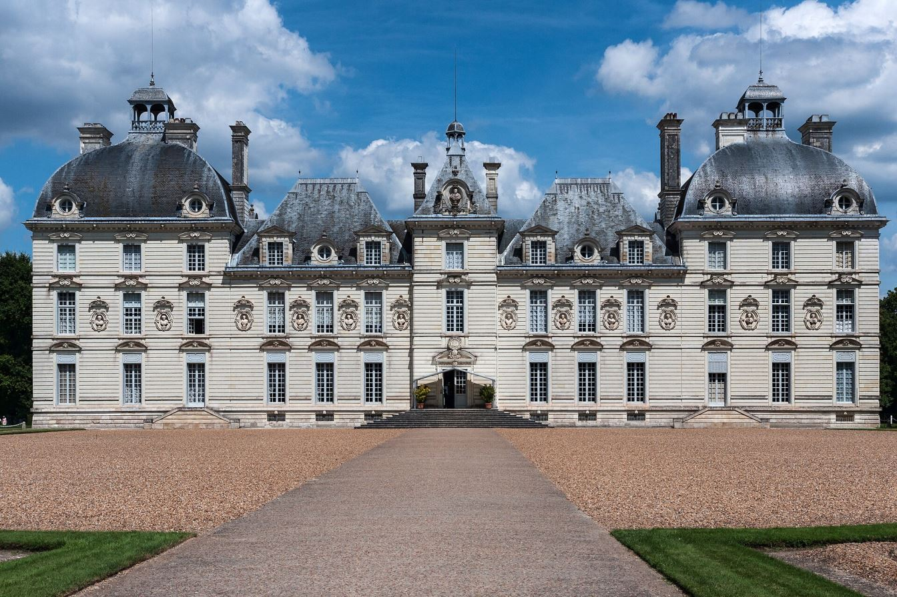

The Secret of the Unicorn (1943) and Red Rackham's Treasure (1944) form one continuous story — the adventure that gave us Marlinspike Hall, Professor Calculus, and some of Hergé's most meticulous research.
The story
At a Brussels flea market, Tintin buys an antique model of a 17th-century warship, the Unicorn, for Captain Haddock. Two collectors, the Loiseau brothers, immediately try to buy it from him — and when he refuses, the model is stolen. Inside its mast Tintin finds a tiny parchment scroll with a coded message.
Haddock, it turns out, owns an identical model, inherited from his ancestor Sir Francis Haddock — a knight who, in 1676, fought the pirate Red Rackham. Rather than let Rackham take his treasure, the knight scuttled his ship and escaped to a desert island, where he built three model ships and hid part of a treasure map inside each.
The third scroll is hidden in the cellars of Marlinspike Hall. When the three parchments are overlaid and held to the light, they reveal coordinates in the Caribbean: 20°37'42" N, 70°11'11" W. Tintin and Haddock charter the trawler Sirius and set sail — joined by a deaf, absent-minded professor and his extraordinary invention.
The professor's shark-shaped submarine finds the wreck of the Unicorn at over 20 metres depth — but no treasure. Only when the expedition has given up does the professor's pendulum reveal the twist: the coordinates refer to the Paris Meridian, which runs straight through Marlinspike Hall. The "treasure" was under the castle the whole time: in the cellars they find a chest holding the deeds that make Haddock the legal owner of the estate — and with the professor's submarine patent sold to the state, Haddock buys Marlinspike Hall from the Loiseau brothers.
Drawn during the occupation
Both albums were created during the German occupation of Belgium. With political content strictly censored, Hergé deliberately turned to a historical pirate adventure — pure escapism as a survival strategy. Paper was rationed by the Office Central du Papier; Hergé's friend Paul Jamin obtained ten tons of paper through his contacts, yet every printing still sold out within weeks. The stories ran as daily black-and-white strips in Le Soir — The Secret of the Unicorn from 11 June 1942 to 14 January 1943 (218 strips), Red Rackham's Treasure from February to September 1943. These were also among the first Tintin albums printed in full colour, on Casterman's second-hand Roland III press, in the standardised 62-page format.
A real 17th-century ship
For the Unicorn, Hergé wanted a real ship. His friend Gérard Liger-Belair, owner of a Brussels model-ship shop, evaluated three designs before Hergé chose Le Brillant: a 64-gun French ship of the line built in 1690 in Le Havre by the shipbuilder Salicon, with ornamentation by Louis XIV's court painter Jean Bérain the Elder. Liger-Belair made a 1:100 scale plan and an exact model, which sat on Hergé's desk as reference. The comic's Unicorn is a third-rate ship of the line, over 40 metres long, with three masts and 50 cannons — and a carved unicorn figurehead, borrowed from a 1745 British frigate because French ships never had one.
Hergé's research took him to the Bibliothèque Nationale de France, the Musée de la Marine in Paris, the port archives of Le Havre — where he found the original 1690 blueprints of Le Brillant — and Diderot's Encyclopédie for rigging and naval artillery.
Reality even echoed the fiction: Hergé's Danish publisher later gave him a model of a real 17th-century Danish ship named Enhjørningen ("The Unicorn"), and historians found a real Admiral Sir Richard Haddock (1629–1715) who fought at the Battle of Solebay — whose grandfather commanded a ship named HMS Unicorn.
The first full-colour adventures
These two albums also mark a printing revolution. In 1941, Casterman bought a second-hand Roland III offset press, and from then on Tintin appeared in four-colour offset printing — the same CMYK process still used today — in Casterman's now-standard 62-page format. The Secret of the Unicorn was among the very first albums produced that way: its French first edition of 1943 printed around 30,000 copies. The Dutch translations followed after the war: The Secret of the Unicorn in 1946, Red Rackham's Treasure in 1947.
The Unicorn diptych in numbers
Marlinspike Hall — a castle with its wings cut off
Marlinspike Hall (Moulinsart in French, Molensloot in Dutch) is modelled on the Château de Cheverny in the Loire Valley, built 1624–1630 by Henri Hurault, treasurer to King Louis XIII. Hergé found the castle in a 1942 tourist brochure — and removed its two outer wings, reasoning that a sea captain's residence needed a smaller footprint. (Which is why the cellars in the album are oddly huge: they were drawn to the scale of the full castle.) He confirmed it in 1975: "The Castle of Marlinspike is inspired by the central part of the Castle of Cheverny."
The name Moulinsart is an inversion of Sart-Moulin, a hamlet near Braine-l'Alleud, not far from Brussels. Since 2001, Cheverny has hosted a permanent exhibition recreating the hall, the crypt, the laboratory and the bedrooms of Moulinsart.

Professor Calculus makes his entrance
Red Rackham's Treasure introduces the series' greatest character: Professor Cuthbert Calculus (Zonnebloem in Dutch), appearing on page 5 of the album. He was visually modelled on the Swiss physicist Auguste Piccard — Hergé called him a "mini-Piccard", shortened so he would fit in a comic panel. His first name, Tryphon, came from Hergé's plumber; his deafness possibly from a deaf colleague at Le Vingtième Siècle; and his use of a pendulum reflects Hergé's own belief in dowsing (he once used a dowser to find his wife's lost wedding ring).
And then there is the submarine: shark-shaped, to blend in with the local fish — 4.5 metres long, 1.2 metres in diameter, over 800 kg of riveted steel plates from an old industrial fuel tank. An electric motor on custom lead-acid batteries, a pedal-controlled tail fin, two compressed-air cylinders giving two hours of oxygen, three thick glass portholes, two headlight "eyes", a compass, depth meter and retractable grab arms. Designed in 1943–1944 — exactly when Cousteau and Gagnan were developing the Aqua-Lung, and four years before Piccard's bathyscaphe first dived.
Every album has its own fingerprints. Learn to spot a genuine first edition in the Collector's Guide.